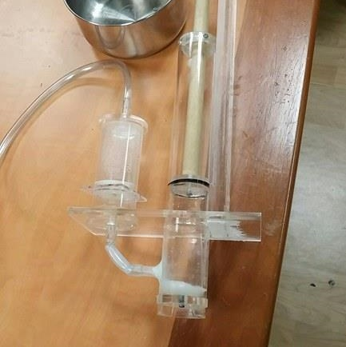
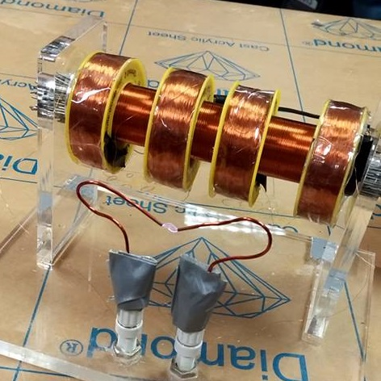
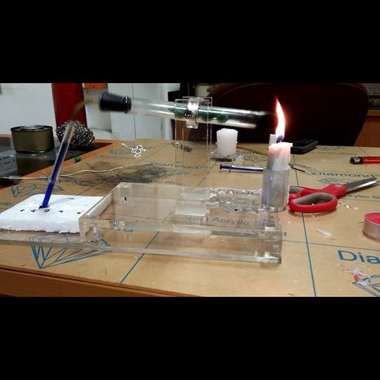

I find the funnest projects will always be in making games. Using python and the pygame module, I have
been able to develop these three interactive games. Not only that, but they are great for learning how
to program. Especially in strategy-type games, it will require thinking of algorithms for computers as
well as the overall game logic. It is also very easy how your code is running because many things are
displayed for you. To view all of my projects, be sure to check out my github link at the bottom of the
page.
The great advantage in programming with C is getting a thorough understanding of pointers, memory management,
and data structures.
Cholesky Decomposition
Cholesky Decomposition is a recusive algorithm used to factor a square matrix. Without going into the details of the
math behind it, this is a powerful tool capable of finding the inverse and determinants of large square matrices. This
project enhanced not only my algorithm background, but required a solid background of pointers and pointer arithmetic.
Router Queue Simulator
Queues are useful data structures that can simulate real world events following "First in First Out" policy.
This project implements the queue data structure in simulating how routers work. A router is capable of servicing
one data packet at a time. However, there are times when packets are arriving at a rate faster than the router can
serve. This is when the packets are stored within a queue. The most important output of this simulation is the average
wait time for a packet given parameters such as arrival rates and service rates.
Flow Networks
For example, treat a flow network as a system of pipes, where at some points, the pipes will converge and at others, the pipes
will diverge. Also, each pipe has its own physical limitations, such as the maximum amount of flow that can go through it.
What we want to know about this network is the path that will result in the maximum flow. In this project, I have utilized the
graph data structure to represent the system and implemented the Ford-Fulkerson algorithm to compute the maximum flow path.
Other than programming languages, I also have experience with Verilog, which is a hardware description language used to model
electronic systems. Using Altera DE1-SoC board and the Quartus Prime software, I have developed projects utilizing registers, counters, finite-state machines, etc. My favourite is simulating morse code using a finite-state-machine. The user enters a letter using the slide switches. After a key is pressed, the LED on the board will blink quickly for a dot and longer for a dash output.
-

Water Pump
-

Induction Coil
-

Marble Sterling Engine
In the summer of 2016, I had the opportunity to assist in research at the National University of Singapore. A fellow student
and I worked under Dr. Anjam Kursheed, who is a professor in the department of Electrical and Computer Engineering. Under our
research project title, "Recreating Great Discoveries in Physics and Engineering", we were responsible to designing and manufacturing famous inventions of the past. The three main projects completed were an ancient greek water pump, an induction
coil, and a sterling engine demo. The kind of work that we did was really less research, and more engineering based. The overall goal of this research project was to design educational experiments for students to learn scientific concepts from. As well, it has helped Dr. Kursheed in writing a textbook used for educators. Because this was meant for experimental purposed, we had to keep our designs as simple as possible, while still showing the concepts and science behind it. In addition, all of our materials used were commerical level and easily accessible at most hardware stores, making it more feasible for large classes to perform. Below, I have also linked a more detailed report in pdf format.